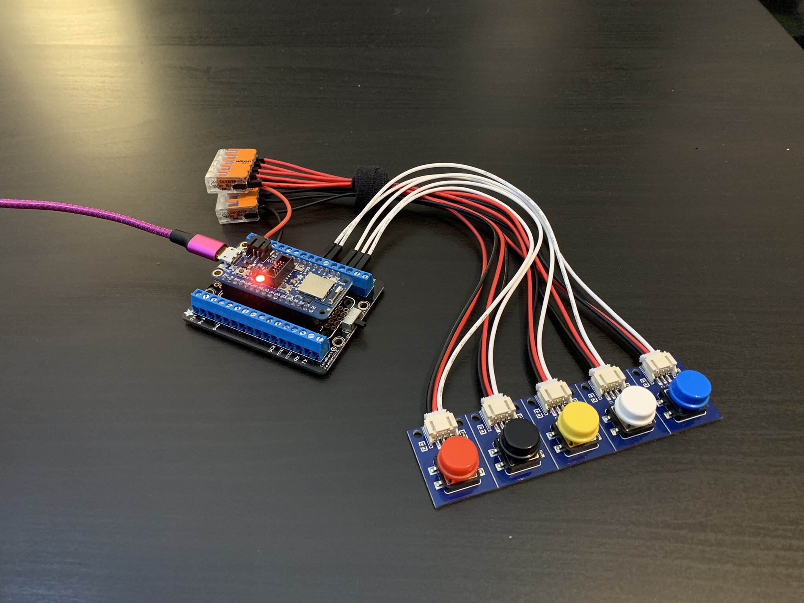

Introduction
Welcome to my first personal project! Throughout
this past Winter Break, I have been working through and
developing a USB HID device that acts as a macro keyboard.
Utilizing CircuitPython on the
Adafruit Feather nrf52840 Express
microcontroller, I was able to
develop such a device. The concept and hardware used in
this project was heavily influenced by
this project by John Park, which was a bluetooth HID keyboard. I was intrigued by the Bluetooth capabilities of the device. However, I encountered
several problems with the libraries necesarry to make the Bluetooth connection. I decided to continue on with the
project without Bluetooth connectivity and just a USB connection. With only 5 total buttons used in the project, I wanted to find a way
to have more usability in the device. I decided to opt for a multi-profile approach, where one button controls the changing of profiles
and the rest handling the outputs.

Overview
This device works as a fully-customizable multi-profile 4-Key Keyboard Macro device.
Each profile is signified by the neopixel LED on the board.
CircuitPython is an Adafruit supported derivative of MicroPython, which is
essentially an optimized version of Python that runs on a microcontroller.
The USB HID library from Adafruit allows us to send keyboard and mouse commands
over a USB cable to any compatible device. The buttons are able to be remapped
by changing the source code.
Functionality
As a USB Human Interface Device (HID), the buttons will output strings or keycodes once the board is connected to a computer via USB.
Once connected, the device will show up in the File Explorer as "CIRCUITPY", with the necessary libraries and "code.py", which holds
the code that the board runs. It's important to note that whatever file is named "code.py" is what will be used. Whenever any changes
are saved to that file, the code will be re-run on the board.
As seen in the image above, the leftmost button handles the changing of the macro profile, which can be done by pressing that button
once. At the start of the program, the board will always be set on profile 1. In order to go back a profile (i.e. going from profile 3
to profile 2), the user can double click the leftmost button. The current version of the code has 4 profiles that showcase the capabilities of the device.
As seen in the code
on lines 77-80, each profile is a list with 4 elements for each button. The order of elements in the list corresponds to the order
of buttons from left to right. In the current version of the code, each profile does as follows:
- (Red LED on the board) This profile each button acting as an up, down, left, and right arrow button, respectively.
- (Green LED) This profile showcases the ability to set any of the buttons to act as a space. The rightmost
button is the space and with the rest of the buttons, one can output "Hello world!"
- (Blue LED) This profile showcases the ability to output long strings of text or characters.
- (Yellow LED) This profile showcases the ability to set any of the buttons to a Caps lock

Single clicking then double clicking to move up and down profiles
User Customization
One of the biggest features of this project is the ability for users to be able to change the mapping of the buttons just with
minor changes to the code. As mentioned earlier, lines 77-80 of the code, each profile is neatly laid out as
their own list. The following is a set of instructions on how to add and change profiles.
Adding or Removing Profiles
- Depending on whether you want to add or remove a profile, you first need to change the value of the variable "num_profiles" on line 11
to reflect the desired amount of profiles.
- Changes need to be made to the function "handleColors()" on line 15 so that each profile has a corresponding LED on the board.
elif statements need to be added for a new profile, which follow the command to assign a color to the neopixel RGB LED. The format
to do so is
pixels.fill([RGB value])
RGB values can be found by searching the web, or going to this site.
-
In the top-level script environment, lists of length 4 can be added or removed. It is mandatory that these lists contain elements
that are of type string or Keycode. The documentation for the list of Keycodes can be found
here.
-
On line 82 of the code, the list "macro" must be modified to reflect the amount of profiles, with each of the profile lists in it.
- Save the file.